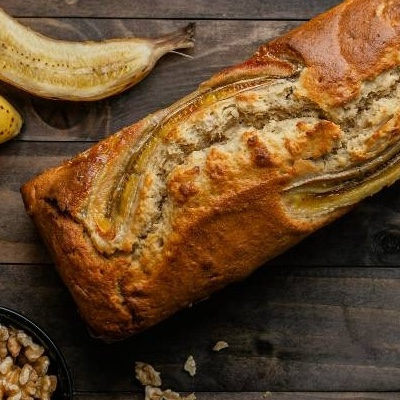

🍰 Bizcocho vegano de plátano

Ingredientes:
- 2 plátanos maduros
- 200 g de harina integral
- 100 ml de bebida vegetal (avena, almendra...)
- 50 ml de aceite de oliva suave
- 1 cucharadita de levadura en polvo
- 1 pizca de canela
- Opcional: chips de chocolate negro
Instrucciones:
- Tritura los plátanos en un bol hasta hacerlos puré.
- Añade la bebida vegetal, el aceite, la harina y la levadura. Mezcla bien.
- Incorpora la canela y los chips de chocolate.
- Vierte en un molde engrasado y hornea 35 minutos a 180ºC.
- Deja enfriar antes de servir. ¡Listo!